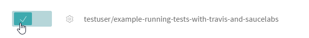
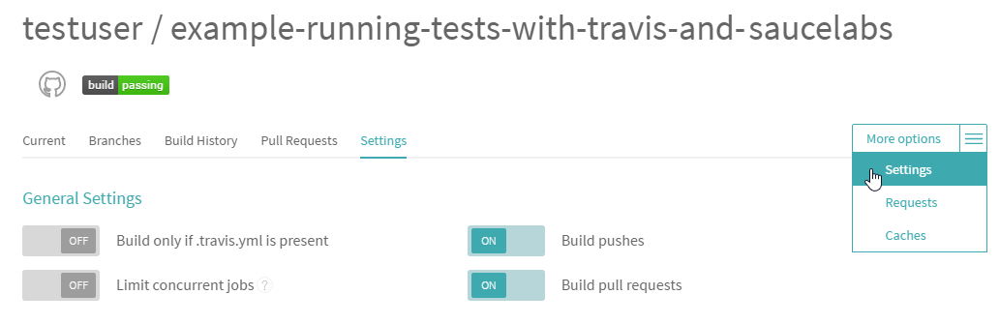

Running Tests Using Travis CI and Sauce Labs
You can automatically run tests as a part of your build process using TestCafe and Travis CI. TestCafe also allows you to use Sauce Labs browsers for testing. Thus, you can run your tests completely in the cloud.
Suppose you have a GitHub project for which you need to automatically run tests in the cloud when the project is modified. To do this, go through the following steps.
- Step 1 - Install TestCafe and create tests
- Step 2 - Enable Travis for your project
- Step 3 - Configure Travis to use Sauce Labs
- Step 4 - Install the Sauce Labs browser provider plugin
- Step 5 - Add the
testscript to package.json - Step 6 - Trigger a Travis CI build
TestCafe provides an example that can show you how to run tests with Travis CI and Sauce Labs.
Step 1 - Install TestCafe and create tests #
Install TestCafe locally in your project and create tests.
Step 2 - Enable Travis for your project #
- Sign in to Travis CI with your GitHub account. Travis CI will synchronize your repositories from GitHub. You can see them on your profile page.
Enable Travis CI for a repository you want to build by flicking the switch on.

By default, Travic CI runs builds on pushes and pull requests. You can manage this behavior in your repository's settings.

Add a
.travis.ymlconfiguration file to the root of your project. This file contains parameters and commands that instruct Travis CI how to execute your builds. For more information, see Customizing the Build.For Node.js projects, the
.travis.ymlfile can have the following content.language: node_js node_js: "stable" before_install: - stty cols 80Commit and push this file to your repository.
Step 3 - Configure Travis to use Sauce Labs #
- Save your Sauce Labs username and access key to the SAUCE_USERNAME and SAUCE_ACCESS_KEY environment variables, as described in SauceLabs documentation.
Go to the repository settings in Travis CI. In the Environment Variables section, define the SAUCE_USERNAME and SAUCE_ACCESS_KEY variables (see Defining Variables in Repository Settings).

Step 4 - Install the Sauce Labs browser provider plugin #
To run TestCafe tests in the cloud using Sauce Labs browsers, you need to install the testcafe-browser-provider-saucelabs plugin locally to your project. To do this, run the following command.
npm install --save-dev testcafe-browser-provider-saucelabs
For more information on testing in cloud browsers, see Browsers in Cloud Testing Services.
Step 5 - Add the test script to package.json #
To test a project, Travis runs test scripts. For Node.js projects, the default test script is npm test.
To tell npm how to run your tests, add the test script to the project's package.json file. Use testcafe command in the script to run tests on a Sauce Labs browser.
"scripts": {
"test": "testcafe \"saucelabs:Chrome@beta:Windows 10\" tests/index-test.js"
}
For more information on how to configure a test run using a testcafe command, see Command Line Interface.
Note: If your app requires starting a custom web server, use the --app TestCafe option to specify a command that starts your server.
This command will be automatically executed before running tests. After tests are finished, TestCafe will stop the app server.
"scripts": {
"test": "testcafe \"saucelabs:Chrome@beta:Windows 10\" tests/index-test.js --app \"node server.js\""
}
Step 6 - Trigger a Travis CI build #
You can trigger a Travis CI build by pushing commits to your repository or creating a pull request.
To check if the build passed or failed, go to the build status page.